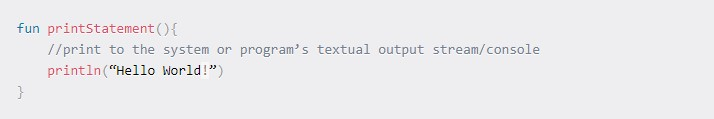
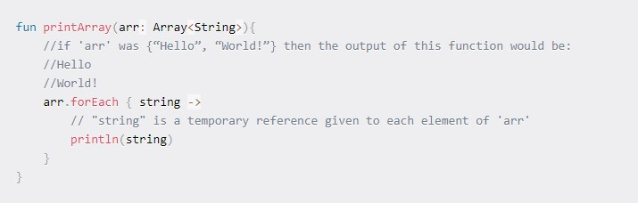
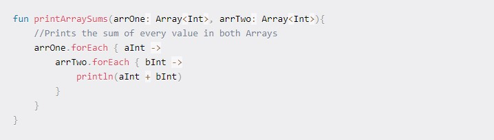
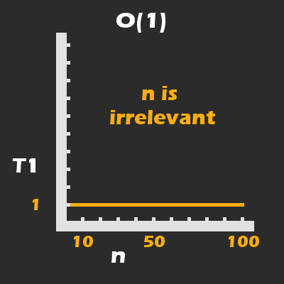
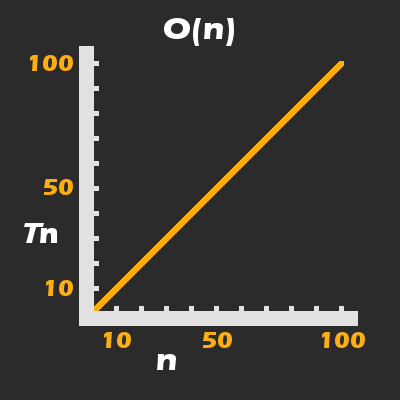
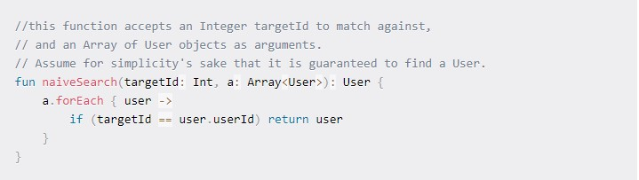
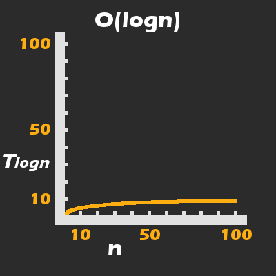

About the Learning Path:
Network Penetration Testing Essentials is a learning path designed to prepares learners to begin their penetration testing journey.
learning path covers the main concepts of information security such as cryptography, scriptings, networking protocols, and working with
shells. Interns, system administrators, developers, and other information technology professionals will get expose cybersecurity-adjacent
content, tools, and technology needed to begin learning penetration testing skills.
Benefits:
By completing the Network Penetration Testing Essentials Learning Path, Learners will:
Obtain basic IT and information security skills
Get prepared to advance their skills and enroll in PEN-200: Penetration Testing with Kali Linux
Start their preparation for entry-level security roles
Test their progress and the level of preparedness with Assessments and Badges
Learning Module examples:
Linux Basics
Window Basics
Networking Fundamentals
Cryptography
Web Applications
Introduction to Actiove Directory
Working w/Shells
Bash, Python and PowerShell Scripting
Troubleshooting
About the Learning Path:
The Web Application Assessment Essentials Learning Path is designed to help Learners grasp the basics needed to start learning
web application security. Web Application Assessment Essentials covers tech-adjacent concepts that are pillars for any cybersecurity
focus area and are valuable for upskilling technical professionals to security roles.
The training also covers web app security-specific Learning Modules such as Secure Coding, Web Attacker Methodology, and Input
Validation. Hands-on Learning Module Exercises allow Learners to practice and solidify their skills. Learners completes Web Application
Assessment Essentials will gain the necessary knowledge to enroll in the Web Attacks with Kali Linux (WEB-200) course.
Benefits:
By completing the Web Application Assessment Essentials Learning Path, Learners will:
Keep track of their progress with interactive exercises throughout the Learning Path
Get challenged to perform with security in mind
Test their progress and the level of preparedness with Assessments and Badges
Elevate their skill set in web application security and prepare for advanced training and certifications
Learning Module examples:
Linux Basics
Window Basics
Networking Fundamentals
Web Attacker Methodology
Web Applications
Input Validationy
Web Session Management
Introduction to Web Secure Coding
JavaScript Basics
About the Learning Path:
Introduction to Secure Software Development is a hands-on Learning Path that teaches developers and security profession how
to implement security concepts throughout software development lifecycles. Through a combination of content on language-agnostic
secures coding principles, videos, and practical exercises, every development teams will build skills applicable to a broad range of web
technologies.
Introduction to Secure Software Development is ideal for role such as Security Software Engineer, Applications Engineer, Release
Manager, Software Developer, or anyone committed to the defense or security of enterprise application. Completing this Learning Path
willempower developers to build and deploy secure software from the start prevents vulnerabilities, and security professionals will gain
an understanding of the software development process.
Benefits:
By completing the Introduction to Secure Software Development Learning Path, Learners will:
Become immersed in secure software development
Learn how to write secure code and avoid common bugs and vulnerabilities
Enrich their DevOps and DevSecOps skills with secure coding principles
Create a security-first mindset through practical exercises
Learning Module examples:
Introduction to Secure Software Development
Introduction to SQL Injection
Introduction to Web Application Debugging
Secure Development Lifecycle
How to Learn the Fundamentals of Software Engineering – in a More Interesting and Less Painful Way.

This article is intended to be an introductory guide to the fundamentals of software engineering.
I have written it with the assumption that you, dear reader, may not know much about the basics of the field, why they are important, and when you should bother to learn them.
We shall go into each of these questions and finish by discussing some ways in which I recommend you learn and approach them.
For those who do happen to be familiar with this subject, there may still be some interesting new perspectives, and particularly in the last section, useful ways to speed up your learning process.
In this article we will discuss:
What made software engineering spooky and intimidating for me, and how that changed
The reason for, and metrics by which we look at some code and conclude that it is less efficient than another approach (computational complexity)
A simple but hopefully useful introduction to Data Structures and Algorithms
The things I personally do to learn topics in software engineering for maximum efficiency and understanding
A way to motivate your efforts by adding in some basic tests to measure correctness and efficiency of your algorithms
Please be aware that I have tried to structure this article in a logical progression where each section (apart from the next which is more about getting over the fear of diving into this subject) builds upon or motivates the next.
I am condensing over a thousand hours of practice and study into one article, and have done my best to explain things clearly and simply as well.
Where The Problems Began
Throughout my limited formal education, I did not have the best relationship with the field of mathematics. And by extension, this impacted my relationship with a great deal of computer science (CS) and software engineering (SEng).
To be specific, it is not that I am bad at math, but I am poor at arithmetic and bad at remembering formulae.
I also found that the way in which mathematics, CS, and SEng are usually taught in schools does not tend to work for me either.
My own learning process to this day is largely driven by pragmatism (emphasis on practical over theoretical knowledge), curiosity about nature, and how this information can help me earn a living – three things I saw rarely emphasized in my western education.
Apart from my uneasy relationship with dry and boring presentations of things which are predominantly of a mathematical nature, I am a self-taught programmer.
To be clear, I took a single programming class at a community college (circa 2013), and the rest of my knowledge comes from self-directed studies. During my early years of that process, I also had to work various day jobs in order to pay the rent, which left me very little spare time and energy to learn my craft.
The end result was that I chose to spend most of my time building personal projects and learning topics specifically for those projects.
This led to me being really quite good at the skill of writing code, learning new technologies, and solving problems. However, if I did apply any concepts in CS and SEng to the code I was writing, it was largely by accident.
To summarize this introduction, I am trying to say that the biggest obstacle in my study of SEng was that I just was not very interested in learning it.
did not know the sense of accomplishment you can get from making a small change to an algorithm which reduces its runtime to completion by a factor of tens or hundreds of times.
I did not know how important it was to pick a data structure based on the nature of the problem I was trying to solve, let alone how to make that decision.
And I had no idea how it was relevant to me slinging mobile apps for a living.
So just in case you are in the same boat, before we get to the technical details, I would like to attempt to answer some of those questions for you. To make things less boring, I will motivate this topic by sharing a true story about what changed my attitude towards this subject.
Swimming With the Big Fish
Towards the end of 2019, I had taken a break from studying Android Development in order to take a deep dive into UNIX Operating Systems and C/C++ programming.
I felt very comfortable with the Android SDK, but many years of JVM programming had left me with a strong sense of having no idea how computers actually worked under the hood. Which bothered me quite a bit.
I was not really looking for work, but at the time a recruiter from a big tech company had reached out to me about my interest in an Android Software Engineer position.
Despite being many months out of practice with Android, I did well in the first interview (it was all core Android concepts that I was familiar with) and was sent an email detailing the topics to be covered in future interviews.
The first section of this email, which detailed Android specific knowledge, was extensive, but I was at least somewhat familiar which most topics and not intimidated. However, when I scrolled down to the section on Data Structures and Algorithms, I suddenly felt like I did when I first started writing code: Like a fish out of water.
It is not that I had never applied any of these concepts in my code, but I certainly had not formally studied any of them.
Although I will do my best to give you a soft and clear introduction to these topics, SEng will immediately hit you with a wall of jargon terms, and my face was figuratively very sore and bruised after reading the entire list of DS and Algos I had to learn in that email.
I was very up front about that with my recruiter, who kindly gave me four weeks to prepare before the next interview.
I knew I could not cover every topic in four weeks, but I did hope that learning a year or two of SEng in a few weeks would show some talent and initiative.
I would love to tell you a juicy story about how I epically failed, or completely dazzled in the next interview, but the reality is that things fell apart before I even got the chance.
I am a Canadian citizen, and the position required relocation to one of many campuses in the United States, in either California or Washington State.
Two weeks into my first deep dive into SEng, I received an email from my recruiter stating that their immigration department did not want to sponsor me. I suspect it had to do with some difficulties around sponsoring a worker who had no degree, but the brewing global pandemic may also have been a factor.
In the end, even though I wanted the chance to succeed or fail in real time, I was happy knowing that I had a very clear idea of the knowledge I was lacking to be a software engineer in a big tech company.
With a clear but difficult path in front of me, I resolved to no longer let the field of SEng intimidate me. I wanted to know what it truly means to be a software developer versus a software engineer.
With that in mind, we shall go into the core ideas in SEng, and how to make the learning of them easier. Not easy – just easier.
The "Big Three" Topics in Software Engineering –And Why They Matter:
The main topics in software engineering can be summarized using a bunch of big scary words and phrases – as is the tradition in anything related to computer science and mathematics. To avoid confusion, I will instead explain them using the English language and examples which prioritize clarity above all else.
I suggest you follow this section in the order I have laid out, as I have deliberately structured it in a logical progression.
First - What Are Runtime And Memory Space?
I want to start off by explaining the reason why we study these topics to begin with.
Being a fan of physics, I was happy to learn that the interplay of time and space which we see in nature is also directly observed in any kind of computer.
However, in this field, we refer to these qualities as runtime and memory space.
To better understand what runtime is, I suggest you pull up your Task Manager, Activity Monitor, or whatever program you have that tells you about your system’s active “processes.”
A process is just a “running program,” and through the magic of having multiple “processors”, CPU virtualization, and time slicing, it can appear that we have tens or hundreds of processes running at the same time.
I threw those jargon terms in so that you can look them up if you are curious about how operating systems work, but doing so it is not necessary to proceed with this article.
In any case, a process’s runtime can generally be thought of as any point in time during which it can be viewed in your system’s process tracking tool.
I use this definition to point out that an active process does not need to have a user interface or even do anything useful even though it may still be taking up runtime in the CPU and memory space.
Speaking of memory space, in order for something to have run time, it has to be somewhere too. That somewhere is the physical memory space of the computer, which is virtualized (again, look up virtualization on your own time but it is not necessary for this article) in order to make it more secure and easier to use.
Every process is allocated its own distinct and protected virtual memory space, which can grow or shrink up to certain boundaries and depending on various factors.
Let us take a break from theory to talk about why we should care about it. Since runtime and memory space can be accurately measured but are also limited, humans like you and I can really screw things up if we do not pay attention to these limitations!
To be clear, here are two very important things we want to care about as programmers and engineers:
Will our program or even the whole system crash because we have mismanaged the finite resource of memory space?
Will our programs solve problems for our users in a timely and efficient manner, or will they hang so long that our users decide to force quit, demand a refund, and leave a nasty review?
These question largely dictate the success of our programs whether you formally study them or not. With any luck I have motivated you to learn what I call the big three topics in software engineering, which we shall go into now.
How We Measure Runtime And Memory Space:
The first of the big three topics is described using a big scary term:
Asymptotic Runtime & Space Complexity.
Having already described runtime and memory space, I think a serviceable replacement for the word complexity here is “efficiency." And asymptotic is related to the fact that we can represent this efficiency (or lack thereof) on a two dimensional Cartesian Graph. You know, x and y, rise over run, and all that stuff.
Do not worry if you are unfamiliar with this stuff. You only need a very basic understanding of these things to apply it in your code.
Also, note that there is such a thing as a Graph data structure, but that concept is far removed from a Cartesian Graph and not what I am referring to.
Since we can represent our code and how it behaves with respect to either runtime or memory space on a Cartesian Graph, it follows that there must be functions which describe how to draw such a graph.
The way in which we describe how efficient our code in this way is to use “Big O” notation.
Here is the simplest introduction I can give you in order to understand this topic. I will use the modern programming language Kotlin for my code samples which will hopefully provide a happy middle ground for you web and native developers.
Suppose three functions (also sometimes known as methods, algorithms, commands, or procedures):
Function printStatement:

Function printArray:

Function printArraySums:

For ease of understanding, suppose that every time println(...) is called, it takes 100ms, or 1/10th of a second on average to complete (in reality 100ms for a single print command is terribly slow but it's easier to imagine than a microsecond or picosecond).
With that in mind, let us think critically about how these functions can be expected to behave differently, based on what inputs they are given.
printStatement, barring anything other than a catastrophic failure of the system itself, will always take an average time of 100ms to complete.
In fact, while Big O notation is very concerned about the size of the arguments given to a function (that will make more sense shortly), this function does not even have any arguments to change its behaviour.
Therefore, we can say that the runtime complexity (time taken until completion), is constant, which can be represented by the following mathematical function and graph:

The runtime (T) for printStatement is always an average of 100 milliseconds and is therefore constant.
In the above graphic, T represents the runtime for println(...) which we established to be an average of 100 milliseconds. I will explain what n refers to momentarily.
printArray presents a new problem. It stands to reason that the time it takes for printArray to complete will be directly proportionate to the size of the Array, arr, which is passed into it.
If the Array has four elements, that would result in println(...) being called four times, for a total average runtime of 400ms for printArray itself. To be more mathematically precise, we would say that the runtime complexity of printArray is linear:
The number of times println(...) is called, is directly proportionate (i.e. grows linearly) with respect to n.
printArraySums takes things a step further into something which you should be concerned about even as a junior or intermediate level developer. The number of arguments/inputs to any given function is referred to with a small n, when using Big O notation.
In our second function, this refers exclusively to the size of the Array (that is, arr.size), but in the third function it refers to the collective size of multiple arguments (that is, arrOne and arrTwo).
In Big O notation, there are actually three different qualities of a given piece of code that we can pay attention to:
In Big O notation, there are actually three different qualities of a given piece of code that we can pay attention to:
How efficient is the code if n is of an average expected size (average performance)?
How efficient is the code if n is near or at the its maximum allowable value for the system (worst-case performance)?
Generally speaking, in the same sense that a civil engineer is most concerned about the maximum number of vehicles a bridge can support, a software engineer is usually most concerned about worst-case performance.
By looking at printArraySums, you should be able to reason that we can represent its worst-case runtime complexity (the number of times println(...) will be called) as n * n; where n is at or near to the maximum allowable size of an Array in the system.
In case it is not clear, we are not just pairing and summing the elements of arrOne and arrTwo at the same indexes, we are literally summing every value of them together in a nested loop.
From here you can start to truly understand the importance of asymptotic runtime and space complexity. In a worst-case scenario, the runtime grows exponentially in a quadratic curve:

printArraySums(...) has its runtime grow in a quadratic curve. For T = 100ms, n does not even need to be that large to result in a bad user experience.
Two final notes on this topic: Firstly, if I suddenly made you a bit fearful of nested loops (and yes, each nested loop potentially adds another factor of n), then I have done a good job.
Even so, understand that if you are certain that n will not exceed a reasonable size even in a function which has exponential growth, then there is not actually a problem.
If you would like to know how to determine if n will have a negative impact on performance, stick around for the last section of this article.
Secondly, you may have noticed that all of my examples were about runtime complexity, not memory space complexity.
The reason for this is simple: We represent space complexity in exactly the same manner and notation. Since we do not actually allocate any new memory apart from a temporary reference or two within each frame of the forEach{...} loops, asymptotically speaking, the second and third functions are still linear, O(n), with respect to memory allocation.
Data Structures
The term Data Structure, despite what any single teacher may tell you, does not have a singular definition.
Some teachers will emphasize their abstract nature and how we can represent them in mathematics, some teachers will emphasize how they are physically arranged in memory space, and some will emphasize how they are implemented in a particular language specification.
I hate to tell you this, but this is actually a very common problem in computer science and engineering: One word meaning many things and many words meaning one thing, all at the same time.
Therefore, rather than trying to make every kind of expert from every kind of academic or professional background happy by using a plethora of technical definitions, let me upset everyone equally by explaining things as clearly as I can in plain English.
For the purposes of this article, Data Structures (DS) refer to the ways in which we represent and group together our application’s data in our programs. Things like user profiles, friends lists, social networks, game states, high scores and so on.
When considering DS from the physical perspective of the hardware and operating system, there are two main ways to build a DS. Both ways take advantage of the fact that physical memory is discrete (a fancy word for countable), and therefore addressable.
An easy way to imagine this is to think about street addresses and how, depending on which direction you are physically moving (and depending on how your country organizes street addresses), the address increases or decreases in value.
Physical Array
The first way takes advantage of the fact that we can group pieces of data (for example a list of friends in a social media application) into a chunk of contiguous (physically next to each other) memory space.
This turns out to be a very fast and efficient way for a computer to traverse memory space. Instead of giving the computer an n sized list of addresses for each piece of data, we give the computer a single address denoting the start of this DS in physical memory, and the size of (that is, n) the DS as a single value.
The instruction set for doing this could be as simple as telling the machine to move from left to right (or whatever direction), decrement the value of n by 1 each move, and to stop/return when that value hits 0.
Lists Of Links (Addresses)
The second way requires each piece of data in the structure itself to contain the address(es) of the next or previous (maybe both?) item within itself.
One of the big problems with contiguous memory spaces is that they present problems when it comes to growing (adding more elements) or shrinking (this can fragment the memory space, which I will not explain but suggest a quick google search).
By having each piece of data Link to the other pieces (usually just the previous or next one), it becomes largely irrelevant where each piece sits in physical memory space.
Therefore, we can grow or shrink the data structure with relative ease. You should be able to reason that since each part of the structure stores not just its own data, but the address of the next (or more than that) element, then each piece would necessarily require more memory space than with the contiguous Array approach.
However, whether it is ultimately more efficient depends on what kind of problem you are trying to solve.
The two approaches I have discussed are generally known as an Array and a Linked List. With very little exception, most of what we care about in the study of DS is how to group collections of data which have some kind of reason to be grouped together, and how best to do that.
As I tried to point out, what makes one structure better in a certain situation can make it worse in another.
You should be able to reason from the previous few paragraphs that a Linked List is typically more suitable for a dynamic (changing) collection, whereas an Array is typically more suitable for a fixed collection – at least with respect to runtime and space efficiency.
Do not be misled, however! It is not always the case that our primary concern is to pick the most efficient DS (or algorithm) with respect to runtime and memory space. Remember, if n is very small then worrying about a nanosecond or a few bits of memory here and there are not necessarily as important as ease of use and legibility.
The last thing I would like to say about DS is that I have observed a profound lack of consensus about the difference between a DS and a Data Type (DT).
Again, I think this is largely due to different experts approaching this from different backgrounds (mathematics, digital circuits, low level programming, high level programming) and the fact that it is really quite hard to make a verbal definition of one that does not at least partially (or entirely) describe the other.
At the risk of making the situation even more confusing, on a purely practical level, I think of data structures as things which are independent of a high level programming language’s Type System (assuming it has one). On the other hand, a data type is defined by and within such a Type system.
But I know that Type Theory itself is independent of any particular Type system, so you can hopefully see how tricky it is to say anything concrete about these two terms.
Algorithms
I took quite a long time to explain the previous two topics because they allow me to introduce and motivate this topic rather easily.
Before we continue, I must very briefly try to untangle another mess of jargon. To explain the term “algorithm” in my own way, it is actually very simple: An algorithm is a set of instructions (commands) which can be understood and executed (acted upon) by an Information Processing System (IPS).
For example, if you were to follow a recipe to cook something, then you would be the IPS, the algorithm would be the recipe, and the ingredients and cookware would be the data inputs (arguments).
Now, by that definition the words function, method, procedure, operation, program, script, subroutine and algorithm all point to the same underlying concept.
This is not by accident – these words all fundamentally mean the same thing. The confusion is that different computer scientists and language designers will implement (build) the same idea in a slightly different way. Or even more depressingly, they will build them the same way but give a different name. I wish this was not the case, but the best I can do is to warn you.
That is all you need to know about algorithms in general, so let us be more specific about how they can help us to write better code.
Recall that our primary concern as software engineers is to write code which is guaranteed to be efficient (at least such that it keeps our users happy) and safe with respect to limited system resources.
Also recall that I previously stated that some DS perform better than others with respect to runtime and memory space, particularly as n gets large.
The same is true of algorithms. Depending on what you are trying to do, different algorithms will perform better than others.
It is also worth noting that the DS will tend to shape which algorithms can be applied to the problem, so selecting the right DS and the right algorithm is the true art of software engineering.
To finish off this third main topic, we will look at two common but very different ways to solve the one problem: Searching an ordered Array. By ordered, I mean to say that it is ordered something like least to greatest, greatest to least, or even alphabetically.
Also, assume that the algorithm is given some kind of target value as an argument, which is what we use to locate a particular element. This should become clear in the example in case there is any confusion.
The example problem is as follows: We have a collection of Users (perhaps loaded from a database or server), which is sorted from least to greatest by a field called userId, which is an Integer value.
Suppose that this userId comes from taking the system time (look up Unix Time for more info) just prior to creating the new User. Rounded to the smallest value that still guarantees no repeated values.
If that previous sentence did not make sense, all you need to know is that this is a sorted collection with no repeats.
A simple way to write this algorithm would be to write what we will call a Naive Search (NS). Naive, in this context, means simple, but in a bad way, which refers to the fact that we just tell the computer to start from one end of the collection and move to the other until it finds a match to the target index.
This is generally achieved by using some kind of loop:
Function naiveSearch:

If we happen to only have a few hundred, or even a few thousand users in this collection, then we can expect this function to return quite quickly all the same.
But let us assume we are working in a successful social media tech start up, and we have just hit one million users.
You should be able to reason that naiveSearch has O(n) asymptotic complexity as its worst case runtime complexity. The reason in short is that if the target User happens to be located at n, then we must invariably traverse the entire collection to get there.
If you are not already familiar with the Binary Search (BS) algorithm, then you should prepare to have your mind blown.
What if I told you that by using a BS algorithm to search our collection with one million elements, you will only ever make, at most, 20 comparisons? That is right; 20 comparisons (as opposed to 1 million with NS) is the worst case scenario.
Now, I will explain how BS works in principle, but my one piece of homework for you to do is to implement it in your preferred programming language. It may be that the language you choose already has a BS implementation from its standard library, but this is an important learning exercise!
In principle, rather than searching an ordered collection one by one, unidirectionally, we start by looking at the value at index n/2. So in a collection with 10 elements, we would check the fifth element. The ordering is important, because we can then compare the element at n/2 with our target:
If the value of that element is greater than the target, we know that the element we want must be located earlier in the collection
If the value of that element is less than the target, then we know that the element we want must be located further ahead in the collection
You should be able to guess what happens if we have a match
Now, the idea is that we are cutting the dataset in half every iteration. Suppose the value at element n/2 was less than our target value. We would next select the middle index between n/2 and n.
From there, our algorithm keeps slicing back or forth using the same logic over a smaller and smaller range of indexes in our collection.
This brings us to the beauty of the BS algorithm applied to a sorted collection: Rather than the time it takes to complete growing linearly, or exponentially with respect to n, it grows logarithmically:

A Binary Search has logarithmic runtime complexity, which means that it handles large values of n like a boss (very well)
If this article really is your first introduction to the main ideas in software engineering, then please do not expect everything to make sense immediately.
While I hope that some of my explanations helped, my primary goal was to give you a basic list of ideas to study yourself, and what I believe to be a good order in which to study those ideas.
The next step for you is to make a plan for learning this field, and to take action on it. The following section is all about how to do that.
How to Learn Software Engineering – Some Practical Advice
I will now discuss some ideas and approaches which I have personally used to make the process of learning various DS and algorithms easier (but not easy!), both practically, and from motivational perspective.
As a learning aid, you might also want to watch my live lesson on youtube where I cover this topic. Do not skip the rest of this article though; I go into much more detail here!
Follow A Project-Based Learning Approach
This is actually the first thing I tell any new programmer who asks me the “best way” to learn how to code. I have given a longer version of this explanation many times, but I will summarize the general idea.
In any field of programming, you will notice that there is an incredibly large number of topics to study, and the field itself is constantly evolving both for academics and industry professionals.
As I mentioned in the introduction, not only did I have no curriculum to guide my studies, but I also had limited time to study because I had rent due at the end of each month. This led me out of sheer necessity to develop and follow my project based learning approach.
In essence, what I suggest you do is to avoid learning DS & Algorithms by simply studying things topic by topic and just taking notes about each one.
Instead, you will start by picking a basic topic (like the ones I covered before) and immediately writing a code snippet or small application which uses it.
I created a repository which had a package for every family of DS & algorithm that I wanted to learn. For general algorithms it was mostly the sorts and searches (Bubble Sort, Merge Sort, Quick Sort, Binary Search, and so on). For more specific DS like Linked Lists, Trees, Heap, Stack, and others, I wrote both the DS itself and a few algorithms specific to that particular DS.
Now, I found that some kinds of DS were difficult to understand and implement at first.
One family of DS which gave me trouble for quite some time were called “Graphs.” The field in general is full of some particularly awful and overloaded jargon, but this particular topic even has a misleading name (hint: a better name would be “Networks”).
After spinning my wheels for several weeks (although in fairness I was learning this on the side), I finally admitted to myself that I needed a clear reason to use this DS in some application code. Something to justify and motivate the many hours I was going to spend learning this topic.
Having previously built a Sudoku game using algorithms that worked with two and one dimensional Arrays, I recalled reading somewhere that it was possible to represent and solve a Sudoku game using an Undirected Colored Graph.
This was incredibly useful, as I was already familiar with the problem domain of Sudoku, so I could focus intensively on DS and algorithms.
While there is plenty more that I have to learn, I cannot describe how satisfying it was when I wrote an algorithm that generated and solved 102 Sudoku puzzles in 450 milliseconds.
Speaking of, let me talk about another way to write better algorithms which can also be a great source of motivation and goal setting.
Test Your Code
Look, I know many people make the subject of testing a complete nightmare for beginners. This happens because they confuse the very simple idea of how to test code with some very elaborate and confusing tools one can optionally use to test their code. But this one is important so please stay with me.
To go back to basics, without even talking about Big O notation, how do we know if one algorithm is more efficient than another? Of course, we have to test them both.
Now, it is important to mention that benchmark tests can give you a good (or even great) general idea, but they are also strongly influenced by the system in which they are tested.
The more precise your tests need to be, the more concerned you will need to be about your test environment, set up, and accuracy. However, for the kind of code I typically write, a good general idea is all I need.
There are two kinds of tests which I find most useful for when I am writing my algorithms, both for practice and production code. The first kind of test answers a very simple question: Does it work?
To take an example from my Graph Sudoku application, one of the first hurdles for me was to build what is called an Adjacency List for Sudokus of varying sizes (I tested 4, 9, 16, and 25, which are, not by accident, perfect squares (mathematically speaking).